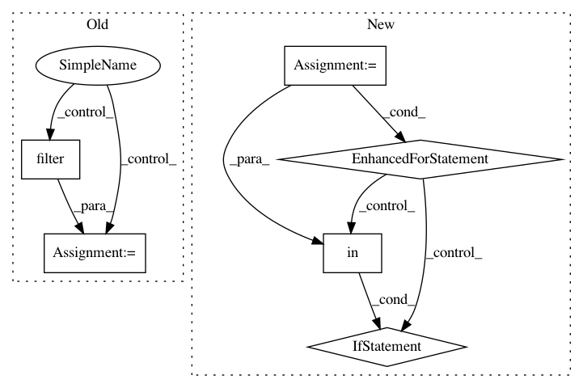

df1dd9b108f3cd7d5130e7f654ea099021c7a2b3,qanta/guesser/experimental/elasticsearch_instance_of.py,ElasticSearchIndex,search,#ElasticSearchIndex#Any#Any#Any#Any#,82
Before Change
else:
apply_filter = False
if apply_filter:
s = Search(index=INDEX_NAME)\
.filter("term", instance_of=predicted_instance_of)\
.query(
"multi_match",
query=text,
fields=["wiki_content", "qb_content"]
)
else:
s = Search(index=INDEX_NAME) \
.query(
"multi_match",
After Change
return x_data, y_data, i_to_class, class_to_i
class ElasticSearchWikidataGuesser(AbstractGuesser):
def __init__(self):
super().__init__()
self.class_to_i = None
self.i_to_class = None
self.instance_of_model = None
guesser_conf = conf["guessers"]["ESWikidata"]
self.confidence_threshold = guesser_conf["confidence_threshold"]
self.normalize_score_by_length = guesser_conf["normalize_score_by_length"]
In pattern: SUPERPATTERN
Frequency: 3
Non-data size: 6
Instances
Project Name: Pinafore/qb
Commit Name: df1dd9b108f3cd7d5130e7f654ea099021c7a2b3
Time: 2017-05-24
Author: ski.rodriguez@gmail.com
File Name: qanta/guesser/experimental/elasticsearch_instance_of.py
Class Name: ElasticSearchIndex
Method Name: search
Project Name: Pinafore/qb
Commit Name: 2f74f04253d5a90459401d0f09ea0559d50371a0
Time: 2016-06-25
Author: ski.rodriguez@gmail.com
File Name: util/guess.py
Class Name: GuessList
Method Name: check_recall
Project Name: matplotlib/matplotlib
Commit Name: 1cfdb741661c2c9083235f258512c39cecae0da0
Time: 2019-02-06
Author: anntzer.lee@gmail.com
File Name: lib/matplotlib/backends/backend_qt5.py
Class Name: NavigationToolbar2QT
Method Name: edit_parameters